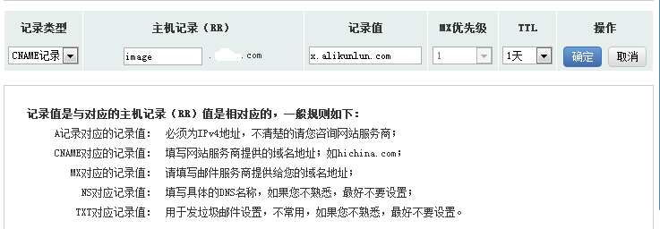
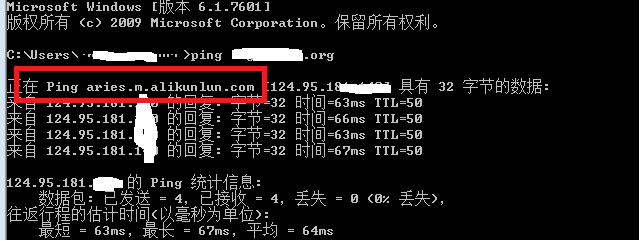

Your browser doesn't support the features required by impress.js, so you are presented with a simplified version of this presentation.
For the best experience please use the latest Chrome, Safari or Firefox browser.
<<<<<<< HEAD
什么是CDN
=======
Content Delivery Network(内容分发网络)
>>>>>>> da5116e596ebe6f9bbd62ac87e3aafc51717215e
Content Delivery Network 内容分发网络
通过在现有的Internet中增加一层新的网络架构，将网站的内容发布到最接近用户的网络"边缘"（节点服务器），使用户可以就近取得所需的内容，解决Internet网络拥挤的状况，提高用户访问网站的响应速度
<<<<<<< HEAD
CDN架构
中心
CDN网管中心和DNS重定向解析中心，负责全局负载均衡，设备系统安装在管理中心机房
边缘
主要指异地节点，CDN分发的载体，主要由Cache和负载均衡器等组成
=======
CDN的架构
CDN网络分为中心和边缘（节点）
中心
CDN网管中心和DNS重定向解析中心，负责全局负载均衡，设备系统安装在管理中心机房
边缘
主要指异地节点，CDN分发的载体，主要由Cache和负载均衡器等组成
>>>>>>> da5116e596ebe6f9bbd62ac87e3aafc51717215e
CDN工作原理
用户访问了使用CDN服务的资源时,DNS域名服务器通过CNAME方式将最终域名请求重定向到CDN系统中的智能DNS负载均衡系统.智能DNS负载均衡系统通过一组预先定义好的策略(如内容类型、地理区域、网络负载状况等),将当时能够最快响应用户的节点地址提供给用户
CDN工作流程图

适用场景
* 访问量大的网站，被访问内容更新周期比较长的网站：在线视频、游戏、图片、音频、社交、电商、下载站、政府企业门户等
* 一定量级的静态资源访问，包括html,js,css,apk,mp3,flv等所有静态资源
计费方式


操作简介
1. 开通CDN服务
2. 添加域名设置

3. CNAME绑定

4. ping一下

FAQ
1. CDN缓存时间
CDN的cache软件遵循http(https)协议，缓存时间由文件header头的Cache-Control或Expires来控制。
2. 如何刷新缓存
阿里云：手动刷新目录和文件。腾讯：设置缓存时间自动刷新。